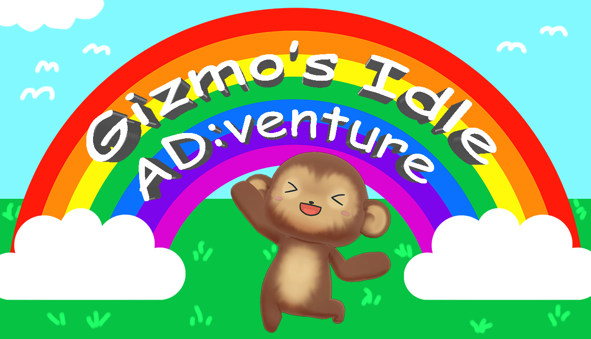
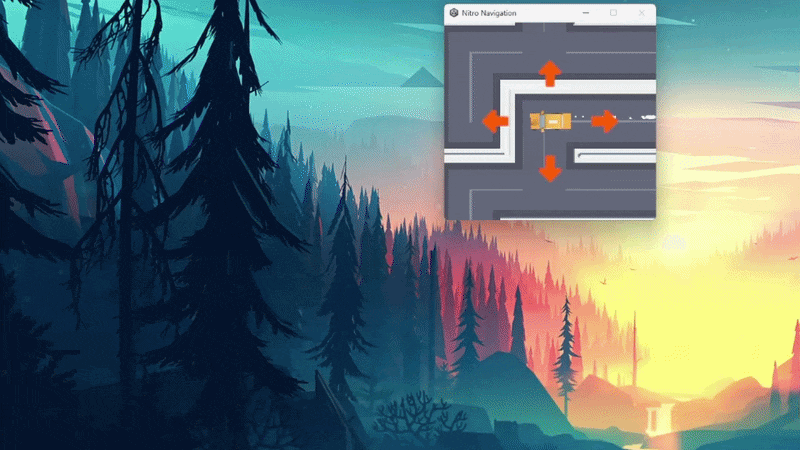
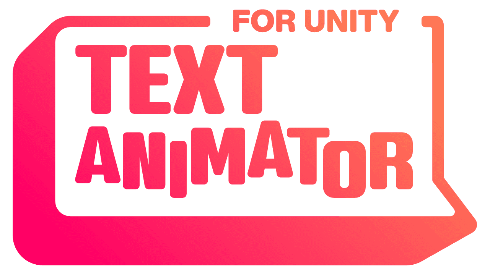

This game consists of two seperate applications that communicate with each other localy through a bit file. The first application is a desktop buddy that guides the player through the game and provides a fun and interactive experience. The second application is a collection of minigames that is disguised as advertisements. The player needs to complete the minigame in order to close the ad.
Role: Solo Dev
Time frame: Ongoing
Team size: Me, myself & I
Unity (C#)
- Memory Mapped File Writer
- Window Modifier
- Dialogue System
All the communication between the two applications is handled through a memory-mapped bit file. The applications has its own memory space allocated that they can read and write from. Whenever the the file gets updated, an event is sent to all application to check if any changes was made in there memory space. This communication task just a few frames witch makes it very responsive and since it's all local, it doesn't require any internet connection.
A challenge I ran into was that if you would send multiple messages in a row, the event would only trigger once, and the applications would only read the last message. To fix this, I implemented a ring buffer. A ring buffer is a fixed-size circular queue: when you reach the end, you wrap back around to the start.
How it works:
- You have a head position and a tail position.
- Write advances the head, read advances the tail.
- If head catches tail the buffer is full, if tail catches head it's empty.
I decided to go with this approach mainly because it made it easy to reuse the allocated memory, which meant that the bit file didn't need to grow too much. The fast O(1) operation time was a bonus, since I needed the send and receive times to be as short as possible to reduce latency.
The game uses a lot of windows manipulation like resizing, moving, hiding windows, etc. For this I'm calling the Windows API through C#. I have never worked directly with the Windows API before, so it was a challenge to find what was possible and to keep track of all the flag values so I made a small wrapper class to make it easier to use and to keep the code clean.
There was a lot of trial and error when it came to testing and figuring out the order in which everything should run. It also didn't help that I had to build the project every time I wanted to test it, since the code would modify the Unity Editor window, making it nearly impossible to work with because of all the moving and scaling (and sometimes softlocks).

One problem I haven't found a perfect solution for is the desynchronization between Windows internal update loop and Unity's. Since the Windows API runs on a separate thread that Unity does not have access to, it is nearly impossible to synchronize the two 100%. This only becomes a problem when trying to match the movement of in-game objects with the movement of the window. To get them as closely synchronized as possible, I update the position immediately before the camera renders.
I built an easy-to-use, editable dialogue system for the game. It reads dialogue data
from a .cvs file, stores that data in memory, and feeds lines into the dialogue writer using
the Text
Animator asset. The game currently uses one-way conversations (game → player), so the
CSV holds columns like: dialogue text, next dialogue ID, an event to trigger when the line finishes, and
developer notes. The system is designed to be flexible so adding speaker IDs, portrait references, player
responses and so on, is a quick and easy process.

The system can detect when you want to call a function in the dialogue (for example, to
play an animation or sound effect at a specific time). All you need to do is write
<eventName> and the script will execute the function associated with that name.
All of this makes it easy to write dialogue for the game, even if you are not proficient with the engine or familiar with all the ins and outs of the game. Anyone can use the system, and it makes finding and adding new dialogue quick and painless.
I learned a lot about the possibilities and limitations of using the Windows OS in game development. Unity may not have been the best engine for this project, but I'm still glad I tried it, because I can reuse many of the things I learned in future projects. And at the end of the day, it has been a really fun and creative project to work on.